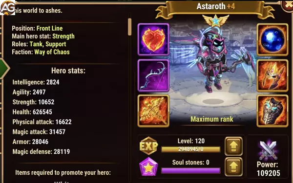

Estratégia de como usar Astaroth em Hero Wars Alliance
Astaroth é um personagem emblemático em Hero Wars Alliance, conhecido por sua robustez como tanque e capacidade de sustentar equipes em batalhas prolongadas. Neste artigo, exploraremos estratégias eficazes para aproveitar ao máximo o potencial de Astaroth em diversas situações de jogo, desde o início até o avançado, destacando sua utilidade contra as Hidras, sua ressurreição única e seu papel fundamental na formação de equipes competitivas na liga Royal.
1. Introdução a Astaroth: Um Tanque Versátil
Astaroth é mais do que apenas um tanque convencional; ele é um escudo confiável para equipes em Hero Wars Alliance. Sua resistência é inigualável, e sua habilidade de absorver dano o torna indispensável em várias situações de jogo. Desde o início, Astaroth pode não parecer impressionante em termos de dano, mas sua verdadeira força reside na capacidade de proteger seus aliados e manter-se firme contra os ataques inimigos.
2. Astaroth contra as Hidras: Uma Defesa Formidável
Uma das áreas onde Astaroth brilha é contra as temíveis Hidras. Com seu alto poder de tanque e resistência, ele se torna uma escolha ideal para enfrentar esses monstros. Especialmente para jogadores iniciantes no Early Game até o início do End-game, Astaroth pode ser uma âncora vital em suas equipes. Sua capacidade de absorver dano físico e proteger heróis aliados mais fracos é inestimável nessas batalhas. Mesmo no End-game, embora possa haver outras opções mais especializadas, dispensar Astaroth das Hidras exigirá muito tempo e investimento no jogo, tornando-o uma escolha sólida em muitos cenários.
3. Astaroth como Melhor Tanque: Domínio nas Torres e Campanhas
Além de seu desempenho contra as Hidras, Astaroth se destaca como o melhor tanque para várias outras situações. Sua habilidade de ressurreição é uma vantagem significativa em torres e campanhas, onde a sobrevivência é essencial. Ao usar Astaroth nessas áreas, os jogadores podem garantir uma resistência adicional e a capacidade de recuperar-se de encontros desafiadores. Seja enfrentando hordas de inimigos em campanhas ou defendendo torres contra invasões, Astaroth é uma escolha confiável.
4. A Evolução de Astaroth: Do Início ao Avançado
O potencial de Astaroth não é imediatamente evidente no início do jogo. Ele pode parecer fraco em termos de dano e habilidades, mas com investimento e desenvolvimento adequados, ele se transforma em um pilar de equipes vitoriosas. Os jogadores devem focar em fortalecer suas habilidades defensivas e aumentar sua resistência para desbloquear todo o potencial de Astaroth. À medida que avançam no jogo, suas habilidades de ressurreição se tornam ainda mais valiosas, especialmente em batalhas prolongadas onde a resistência é crucial.
5. Astaroth na Liga Royal: Formando Equipes Vitoriosas
Mesmo com a introdução de novos heróis e tanques em Hero Wars Alliance, Astaroth mantém seu lugar entre os mais fortes. Sua versatilidade e capacidade de sustentar equipes o tornam uma escolha popular na liga Royal, onde a competição é acirrada. Ao montar equipes para enfrentar desafios nesta arena, Astaroth frequentemente assume o papel de tanque principal, oferecendo proteção essencial aos seus aliados e ajudando a garantir a vitória.
6. A Construção Ideal de Equipes com Astaroth: Sinergia e Complemento
Para aproveitar ao máximo Astaroth, é crucial construir equipes que aproveitem sua capacidade de tanque e ressurreição. Aqui estão algumas sugestões para formar uma equipe eficaz em torno dele:
DPS de Alto Impacto: Astaroth é um tanque sólido, mas ele precisa de aliados que possam infligir danos significativos aos inimigos. Escolha heróis de alto dano, como K'arkh, Keira ou Jhu, para maximizar o potencial de sua equipe.
Suporte de Cura e Buffs: Embora Astaroth seja resistente, ele ainda precisa de suporte para manter sua equipe viva. Inclua heróis como Martha, Celeste ou Thea para fornecer cura e buffs que aumentem a durabilidade da equipe.
Controle de Multidões: Heróis que podem controlar o campo de batalha são valiosos ao lado de Astaroth. Adicione personagens como Nebula, Krista ou Cornelius para interromper os ataques inimigos e manter o controle da situação.
Outros Tanques ou Heróis de Apoio: Dependendo da situação, pode ser benéfico incluir outro tanque resistente ao lado de Astaroth para dividir o dano e aumentar a sobrevivência da equipe. Alternativamente, heróis de apoio como Faceless ou Dorian podem oferecer sinergia única com Astaroth, aumentando sua eficácia.
7. Estratégias Avançadas com Astaroth: Aproveitando ao Máximo sua Habilidade Única
Além de suas habilidades básicas, Astaroth possui uma habilidade única de ressurreição que pode mudar o curso de uma batalha. Para maximizar o potencial dessa habilidade, considere as seguintes estratégias avançadas:
Tempo de Ativação: Conhecer o momento certo para ativar a habilidade de ressurreição de Astaroth é crucial. Espere até que seus aliados mais importantes sejam derrotados antes de acionar a habilidade, garantindo que eles retornem à batalha quando mais precisarem.
Proteção da Energia: Certifique-se de que Astaroth tenha energia suficiente para ativar sua habilidade de ressurreição quando necessário. Isso pode envolver o uso estratégico de heróis que aumentam a geração de energia ou a conservação de habilidades para momentos críticos.
Posicionamento Tático: Coloque Astaroth em uma posição central na formação da equipe para garantir que ele possa proteger todos os aliados igualmente. Isso também facilita a ativação rápida de sua habilidade de ressurreição quando necessário.
8. Adaptando-se ao Meta Atual: Flexibilidade com Astaroth
Como em qualquer jogo competitivo, o meta em Hero Wars Alliance está sempre mudando. É importante que os jogadores sejam flexíveis e capazes de adaptar suas estratégias para se adequarem ao meta atual. Embora Astaroth seja uma escolha popular e poderosa, pode haver momentos em que outras opções sejam mais vantajosas. Esteja aberto a experimentar diferentes composições de equipe e ajustar seu estilo de jogo conforme necessário.
Talismã do Astaroth
Com Talismã Astaroth recebera mais 80000 pontos de vida e 12000 pontos de defesa mágica, nivelando a defesa com a maioria das penetrações mágicas do jogo.
Sendo assim, com mais defesa mágica e vida, Astaroth poderá defender sua equipe contra qualquer mago que não tenha penetração mágica, o se tornando forte contra equipes de magos.
Atributos do Talismã da Redenção
Slot
Estatística
Pontos Máximo
0
Força
+2000
1
Defesa Mágica
+6000
2
Defesa Mágica
+6000
3
Defesa Mágica
+6000
Pontos Positivos e Negativos
Pontos Positivos
Escudo Físico para todos os aliados
Queima parte da energia do inimigo da linha de fundo
Absorve parte do dano físico do aliado com menos vida
Ressuscitar
Pontos Negativos
Ressuscitar não funciona contra Morrigan
O ressucitar não funciona se morrigan for aliado
O escudo protege apenas dano físico e não é um escudo forte
Guia de Prioridades de Evolução para Astaroth em Hero Wars Alliance
Como um herói tanque em Hero Wars Alliance, as prioridades de evolução de Astaroth são cruciais para otimizar seu desempenho no campo de batalha. Ao alocar estrategicamente recursos como glifos, artefatos e visuais, os jogadores podem aprimorar as capacidades defensivas e a eficácia geral de Astaroth. Neste guia, forneceremos dicas abrangentes sobre como priorizar a evolução de Astaroth, garantindo que os jogadores possam tomar decisões informadas para maximizar seu potencial.
Glifos:
Os glifos desempenham um papel crucial no aprimoramento das estatísticas de Astaroth, tornando imperativo priorizá-los sabiamente. Como um tanque, o foco principal de Astaroth deve ser na sobrevivência. Portanto, priorize glifos que reforcem sua armadura e saúde, pois esses atributos contribuem diretamente para sua capacidade de absorver dano e se sustentar em combate. Em seguida, priorize a defesa mágica para mitigar ataques mágicos recebidos, seguido pela força para melhorar a durabilidade geral e, por último, o ataque mágico para potencial ofensivo adicional.
Glifos
Ordem de Prioridade
Armadura
Maior Prioridade
Vida
Alta Prioridade
Defesa Mágica
Prioridade Moderada
Força
Baixa Prioridade
Ataque Mágico
Menor Prioridade
Artefatos:
Os artefatos de Astaroth influenciam significativamente sua habilidade de combate, sendo essencial investir neles com sabedoria. Ao priorizar artefatos, concentre-se em aprimorar as capacidades defensivas de Astaroth primeiro. Comece melhorando o artefato do livro para aumentar a armadura e a defesa mágica de Astaroth, reforçando sua resistência contra ataques físicos e mágicos. Em seguida, priorize o artefato do anel para aumentar o pool de saúde de Astaroth, aumentando ainda mais sua capacidade de sobrevivência em batalhas prolongadas. Por último, invista no artefato da arma, priorizando bônus que forneçam armadura adicional, solidificando assim o papel de Astaroth como tanque de linha de frente.
Artefatos
Ordem de Prioridade
Livro
Maior Prioridade
Anel
Alta Prioridade
Arma
Prioridade Moderada
Visuais:
Os visuais não apenas melhoram a aparência de Astaroth, mas também contribuem para seu desempenho em combate. Ao selecionar visuais, priorize aqueles que reforçam as capacidades defensivas de Astaroth. Comece priorizando visuais de armadura e vida para aumentar a resistência de Astaroth a ataques inimigos, garantindo que ele possa suportar engajamentos prolongados. Em seguida, invista em visuais que reforcem a saúde para aumentar ainda mais a capacidade de sobrevivência de Astaroth. Além disso, priorize visuais que melhorem a defesa mágica, força e ataque mágico, fornecendo utilidade adicional e potencial ofensivo em combate.
Visuais
Ordem de Prioridade
Armadura
Maior Prioridade
Vida Skin+
Alta Prioridade
Vida
Prioridade Moderada
Defesa Mágica
Baixa Prioridade
Força
Menor Prioridade
Ataque Mágico
Menor Prioridade
Domínio da Evolução de Astaroth: Garantindo Vitória no Campo de Batalha
Priorizar a evolução de Astaroth é essencial para maximizar sua eficácia como um herói tanque em Hero Wars Alliance. Ao focar em glifos, artefatos e visuais que aprimoram suas capacidades defensivas, os jogadores podem garantir que Astaroth permaneça uma força formidável no campo de batalha, capaz de resistir aos ataques inimigos e liderar sua equipe para a vitória. Com essas prioridades de evolução em mente, os jogadores podem tomar decisões informadas para otimizar o desempenho de Astaroth e dominar a competição em Hero Wars Alliance.
Astaroth vs Hidras
Astaroth é um bom Tanque contra as Hidras e pode ajudar seus heróis aliados mais fracos contra as Hidras de dano físico, principalmente para jogadores iniciantes no Early Game até iniciantes do End-game. Já no end-game Astaroth é pouco usado contra as Hidras; mas até que você dispense seu Astaroth das Hidras vai levar muito tempo e investimento no jogo.
Equipe de Astaroth para Hidra: Martha, Mojo, Nebula, Jhu, Astaroth
Astaroth em Batalhas
Forte Contra
Keira - Danada - Ginger - Satori
Counters
Morrigan - Celeste
Melhores Times de Astaroth
Aidan, Sebastian, Yasmine, Tristan, Astaroth
Lilith, Aidan, Xe`sha, Kayla, Astaroth
Lilith, Aidan, Xe`sha, Kayla, Astaroth
Fafnir, Artemis, Tristan, Astaroth, Julius
Martha, Faceless, Jorgen, K'arkh, Astaroth
Martha, Faceless, Jorgen, K'arkh, Astaroth
Jet, Sebastian, Keira, Andvari, Astaroth
Sem rosto, Jorgen, Nebulosa, K'arkh, Astaroth
Martha, Faceless, Nebulosa, K'arkh, Astaroth
Martha, Lars, Jorgen, Krista, Astaroth
Sem rosto, Jorgen, Celeste, Satori, Astaroth
Martha, Jorgen, Celeste, Satori, Astaroth
Sem rosto, Amira, Celeste, Satori, Astaroth
Martha, Amira, Celeste, Satori, Astaroth
Martha, Lars, Jorgen, Krista, Astaroth
Martha, Lars, Nebula, Krista, Astaroth
Dorian, Lars, Celeste, Krista, Astaroth

Astaroth com skin cibernética, Hero Wars.
Habilidades no Nível Máximo
1ª Véu de Chamas
Astaroth cria um escudo para todos os aliados, o escudo só bloqueia dano físico.
Capacidade do Escudo: Max (44457) Fórmula da Habilidade: (100% Ataque Mágico + 100 * (Nível da Habilidade) + 1000)
2ª Devastação
Astaroth arremessa a chama do inferno e queima parte da energia adquirida pelo inimigo na fileira de trás.
Energia Queimada: Máximo (37%) Fórmula de Habilidade (10% * Nível de Habilidade + 25)
3ª Lealdade do Demônio
{Habilidade Passiva}. Astaroth ganha o poder de se conectar ao aliado com menos vida e passa a receber uma parte do dano recebido por este aliado. O dano transferido para Astaroth também é reduzido, conforme mostrado na fórmula da habilidade.
Transferências: Max (47%) - Fórmula de habilidade: (10% * (Nível de habilidade + 20) + 35) - Dano reduzido: Max (33%) - (15% * (Nível de habilidade + 20) + 15)
4ª Última Palavra
Astaroth ganha poder de ressurreição, que pode ser usado uma vez por batalha para reviver um aliado ou a si mesmo.
Saúde extra após a ressurreição: Max (66457) - Fórmula de Habilidade: (100% Ataque Mágico + 250 * (Nível de Habilidade + 40) + 5000)
Palavras-chave: Ressurreição
Conclusão Final do Guia de Astaroth em Hero Wars Alliance
Em conclusão, Astaroth se destaca como um dos tanques mais versáteis e confiáveis em Hero Wars Alliance. Sua capacidade de enfrentar as Hidras, sua habilidade única de ressurreição e seu papel fundamental na formação de equipes vitoriosas na liga Royal o tornam uma escolha indispensável para jogadores de todos os níveis de habilidade. Ao aprender a utilizar suas habilidades de forma estratégica e construir equipes complementares ao redor dele, os jogadores podem aumentar significativamente suas chances de sucesso em todas as áreas do jogo.


 Keira
Keira Sebastian
Sebastian